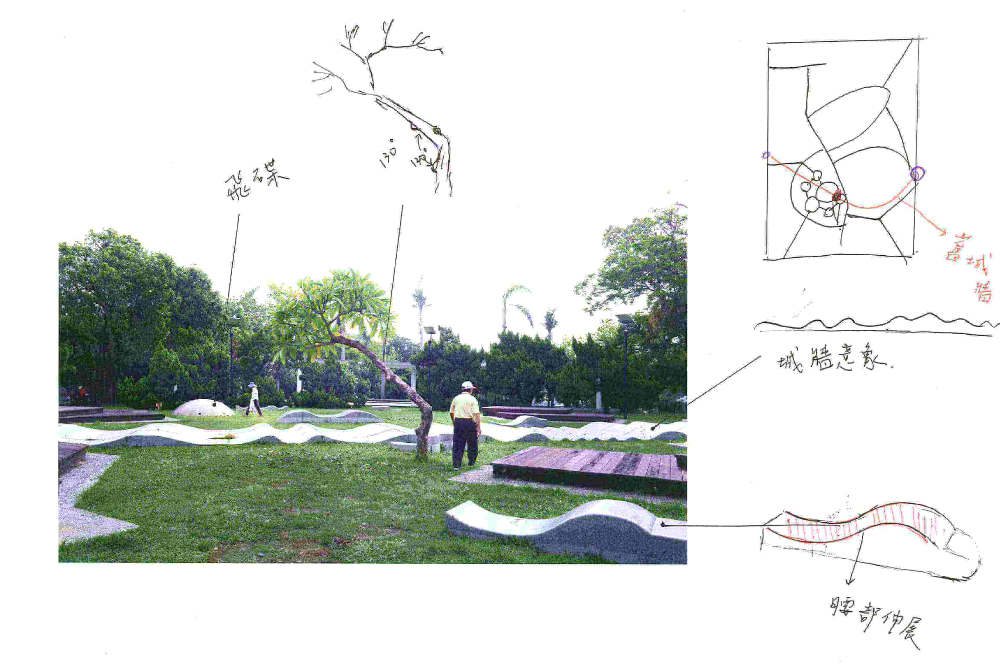

台南路上觀察團
觀察者把城市視為一種新型態的自然，
帶著一種眼光、一種反思、一種閒適，
對城市感興趣卻又若即若離，
用這樣的態度滑行於街道。
台南路上觀察團成立於2015年4月，成員來自各領域的工作者，以遊走於路上為樂，平時目光放置於路邊的人孔蓋、小廣告、塗鴉等乍看不起眼但（在觀察團心中）非比尋常的事物，並試圖以自身的解讀，去理解、定義城市，與之建立關係。
近年「台南學」興起，各式關於台南的討論，往往由媒體帶頭、政府引導，集體朝向某些既定價值，成為一個「代名詞城市」。而路上觀察團，則試圖以「居民」之姿，在自身生活與代名詞間的夾縫地帶，進入歷史、議題、生活場域，透過觀察行動，建構一個「路上觀察式」的台南。
何謂「路上觀察學」
「路上觀察學」顧名思義，就是在「路上」進行「觀察」；加個「學」則帶了點鑽研的意味。路上觀察學源自日本的「考現學」。 相較於考古，考現學把眼光放在當代，記錄人類社會的生態。1986 年「路上觀察學會」成立，將眼光放在地上水溝蓋、路邊失去功能的物件...，以脫離實用性、違背都市秩序為切入點，享受觀察逸出的趣味。
觀察編成
活動＆內容策劃：邱睦容＆蔡明岳
網頁製作：王聖凱
計劃參與成員：
阿國、賴俊傑、冠穎、奇諭、小均、宛儀、林珊竹、聖凱、蓮華、莊以琳、子瑩、國益、北極熊、雪球、Ｍiky-Wu、Milo、Wei-lien、Joeylin、Willy & Gimmy
